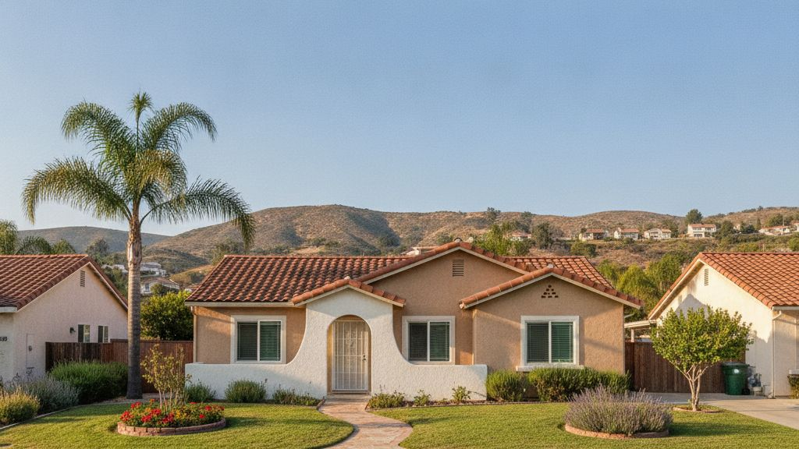

Date of Death Appraisals
A value pinned to the day an owner died, for trustees, executors and the stepped-up basis their CPA will rely on.
A value pinned to the day an owner died, for trustees, executors and the stepped-up basis their CPA will rely on.

An impartial value for the family residence or rental property so a settlement can move forward on solid ground.

Fair market value for trust funding, distribution and probate inventories, written for fiduciaries and their counsel.

Supportable home values for Chapter 7 and Chapter 13 schedules, exemption planning and trustee review.

Appraisal testimony and consulting for disputes over value in court, arbitration or mediation.

Learn what a house is actually worth before you write the offer, especially on unusual or off-market properties.

Price a listing from evidence, not hope, and hand buyers a value that has already been documented.

Values for assessment appeals, gift-tax returns and other filings where a tax authority wants proof.

A documented fair price when a home is sold, gifted or refinanced between relatives.

Independent market-value evidence when a carrier's numbers and the homeowner's numbers do not agree.

Fast equity verification when a house is pledged as collateral for a bail or court bond.

Real-estate valuations that document a sponsor's or applicant's assets for immigration filings.
Send the address and the reason for the appraisal. You will get a firm quote and a schedule before anything is booked.